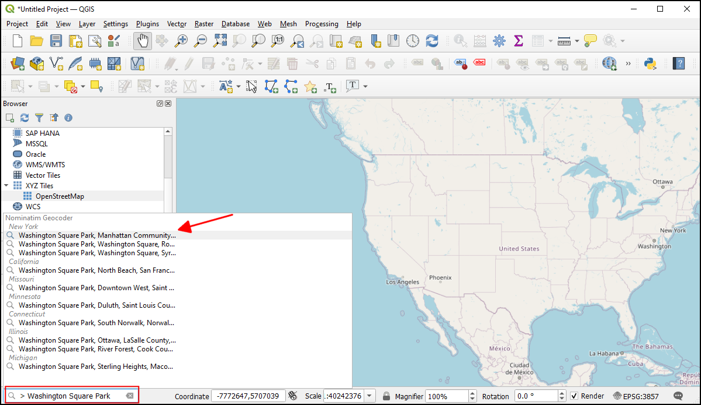
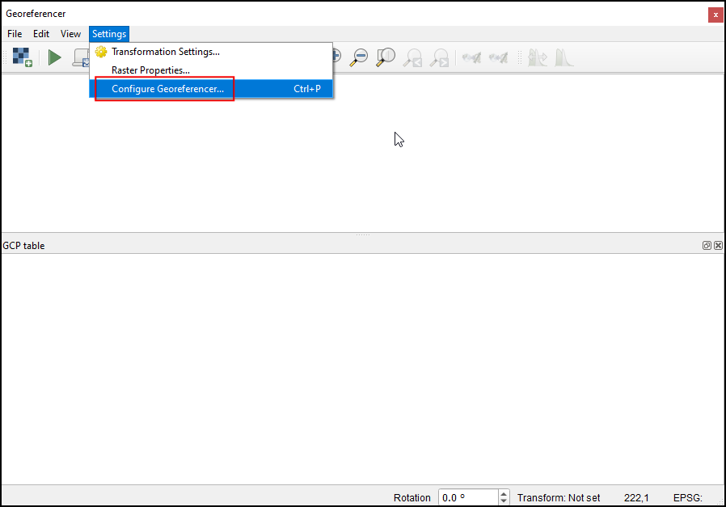

Georeferenzierung von Luftbildern (QGIS3)¶
Im Tutorial Georeferenzierung von Kartenblättern und eingescannten Karten (QGIS3) haben wir den grundsätzlichen Prozess der Georeferenzierung in QGIS betrachtet. Bei der verwendeten Methode wurden die Koordinaten von der gescannten Karte abgelesen und manuell als Kontrollpunkte eingetragen. Oftmals sind auf der zu referenzierenden Karte keine Koordinaten vorhanden oder man möchte ein Bild georeferenzieren. In diesen Fällen kann eine andere bereits georeferenzierte Datenquelle zur Unterstützung herangezogen werden. In diesem Tutorial lernen wir, wie man existierende frei verfügbare Datensätze bei der Georeferenzierung nutzen kann.
Überblick über die Aufgabe¶
Wir werden hoch aufgelöste Ballon-Luftbilder georeferenzieren. Dabei nutzen wir Referenzkoordinaten aus OpenStreetMap.
Weitere Fähigkeiten, die wir erlernen¶
XYZ-Kachel-Layer als Hintergrundkarte verwenden
den eingebauten Geocoder von Nominatim werwenden
einen benutzerdefinierten Wert für fehlende Daten für einen Layer festlegen
Beschaffung der Daten¶
In diesem Tutorial werden wir Drachen- oder Ballon-Luftbildaufnahmen nutzen. Die Aufnahmen werden hier gesammelt: The Public Laboratory. Obwohl man hier auch georeferenzierte Aufnahmen findet, werden wir die nicht georeferenzierten Aufnahmen im JPG-Format herunterladen und den Prozess der Georeferenzierung in QGIS durchgehen.
Wir laden folgendes JPG-Bild herunter: Washington Square Park, New York. Mit der rechten Maustaste können wir auf den JPG-Button klicken und Ziel speichern unter … auswählen.
Der Einfachheit halber können wir auch eine Kopie des Datensatzes unter folgendem Link herunterladen:
Arbeitsablauf¶
Wir nutzen eine Hintergrundkarte von OpenStreetMap, um Koordinaten zu erfassen. QGIS3 unterstützt von Hause aus Kachellayer. Kachellayer werden auch als „XYZ-Layer“ bezeichnet. Die Layer setzen sich aus einzelnen Kacheln zusammen, die nach Zoomstufe (Z) in einem X,Y-Raster angeordnet werden. Du findest den
OpenStreetMapLayer unter:guilabel:XYZ Tiles im Browser Panel. Ziehe den Layer in die Hauptarbeitsfläche. Nachdem der Layer geladen ist, achte auf das unten rechts angezeigte Koordinatensystem (Coordinate Reference System - CRS):EPSG 3857 Pseudo Mercator. Das ist wichtig, da wir die Koordinaten beim Georeferenzieren in diesem Koordinatensystem vom geladenen Layer ableiten werden.

Bemerkung
Hier this page sind mehr Details zu „XYZ-Layern“ und zum Hinzufügen weiterer Hintergrundkarten in QGIS zu finden.
Das Bild, welches wir georeferenzieren wollen, ist
Washington Square Park, New York. Wir können zoomen oder die Ansicht verschieben, um den Park auf der Karte anzuzeigen. Dies ist jedoch umständlich und nicht praktikabel. Ab Version 3.20 von QGIS gibt es eine eingebaute Unterstützung in Form des OpenStreetMap-basierten Geocoders von Nominatim. Wir klicken in die Suchleiste in der linken unteren Ecke des QGIS-Fensters. Um den Geocoder hier auszurufen, beginnen wir den Suchstring mit>. Die Suche nach> Washington Square Parkblendet eine Liste von Adressen ein, aus der wir auswählen können. wir wählen die erste angezeigte Adresse.

Der Arbeitsbereich wird auf den Square Park zentriert. Wir können nun mit der Georeferenzierung beginnen, indem indem wir die Georeferenzierung aus aufrufen.
Bemerkung
Ab der Version 3.26 von QGIS wird die Georeferenzierung aus dem Menü gestartet.

Um ein Luftbild georeferenzieren zu können, müssen wir Koordinaten aus OpenStreetMap auswählen. Zunächst jedoch docken wir den Georeferenzierer im Hauptfenster von QGIS an und wählen die Konfigurationseinstellungen aus

Wir setzen einen Haken bei Georefrenzierungsfenster docken`und klicken :guilabel:`OK.

Das Fenster Georeferenzierung wird unten im Hauptfenster von QGIS verankert. Nun klicken wir das Icon Raster öffnen im Fenster Georeferenzierung`an, um das Bild zu laden. Dieses müssen wir am Downlaod-Ort lokalisieren und klicken :guilabel:`Öffnen.

Bevor wir beginnen, Passpunkte (Ground Control Points - GCP) zu setzen, müssen wir die Transformationseinstellungen festlegen. Dazu wählen wir in den einstellungen -> Transformationseinstellungen… und dort unter Transformationstyp
Polynomial 2aus. In der QGIS-Dokumentation findet man weitere Informationen über die verschiedenen Transformationstypen und deren Einsatz. Wie bereits erwähnt, hat unsere Hintergrundkarte das KoordinatensystemEPSG 3857 Pseudo Mercator, so dass wir dieses Koordinatensystem als Ziel-KBS auswählen. Wir können den Eintrag unter Ausgabedatei unverändert lassen undLZWals Kompression auswählen. Wir setzen den Haken bei Falls nötig 0 für Transparenz verwenden und achten darauf, den Haken bei Nach Fertigstellung ins Projekt laden zu setzen. Wir klicken OK zum Speichern der einstellungen.

Nun wählen wir das Werkzeug Punkt hinzufügen und suchen nach einer leicht identifizierbaren Stelle im Bild. Ecken, Kreuzungen, Pfähle usw. eignen sich gut als Passpunkte. Bei jedem Klick auf das Bild öffnet sich ein Pop-Up und verlangt die eingabe von Koordinaten. Wir benutzen den Button Aus Kartenansicht.

Im
OpenStreetMap-Layer klicken wir auf exakt dieselbe Stelle. Die Koordinaten werden automatisch übernommen. Wir klicken OK.

Bemerkung
Tip: Bei der Auswahl eines Passpunktes an einem Gebäube, sollte man die Unterkante des Gebäudes auswählen. Die meisten Luftbilder und Satellitenfotos stellen Gebäude geneigt dar, sodass die Auswahl von Passpunkten auf Dächern zu Fehlern führt.
Wenn wir von mindestens 6 Punkten auf dem Bild die Koordinaten aus dem Referenz-Layer übernehmen, sehen wir, wie sich die „dX“-, „dY“- und „Rest“-Fehlerwerte zu Werten ungleich 0 verändern. Wenn ein bestimmter Passpunkt besonders hohe Fehlerwerte aufweist, ist das in der Regel ein Hinweis auf einen Eingabefehler der Koordinatenwerte. In diesem Fall kann man diesen Passpunkt löschen und ihn anschließend neu erfassen.

Sobald die Passpunkte zufriedenstellend erzeugt wurden, klicken wir auf Georeferenzierung starten. Dadurch wird ein Prozess der Bildverzerrung gestartet, der die Passpunkte verwendet, um das Ziel-Raster zu erstellen. Sobald die Verarbeitung beendet ist, wird der zugehörige Layer in QGIS geladen. Wir schließen das Fenster Georeferenzierung.

Wir klicken jetzt auf das Icon Layergestaltungsfenster öffnen und wechseln in den Bereich Transparenz. Im Eingabefeld Zusätzlicher Leerwert wird
255eingegeben. Das führt dazu, den weißen Rand um das Bild herum zu entfernen. Wir können nun das georeferenzierte Bild wohl überlagert über den Basis-Layer betrachten.

{kind=link}
Bemerkung
8-bit Bilder haben Pixelwerte von 0-255. Dabei bedeutet 0 schwarz und 255 weiß.
If you want to give feedback or share your experience with this tutorial, please comment below. (requires GitHub account)